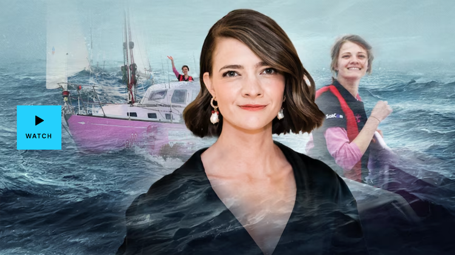
Australian Story: Charting Her Course
Love, loss and sailing the world solo: Jessica Watson takes us inside her amazing voyage as a teenage sailor, speaks about the grief of losing her partner, and a new feature film which has thrust her back into the spotlight.
Read more June 10, 2024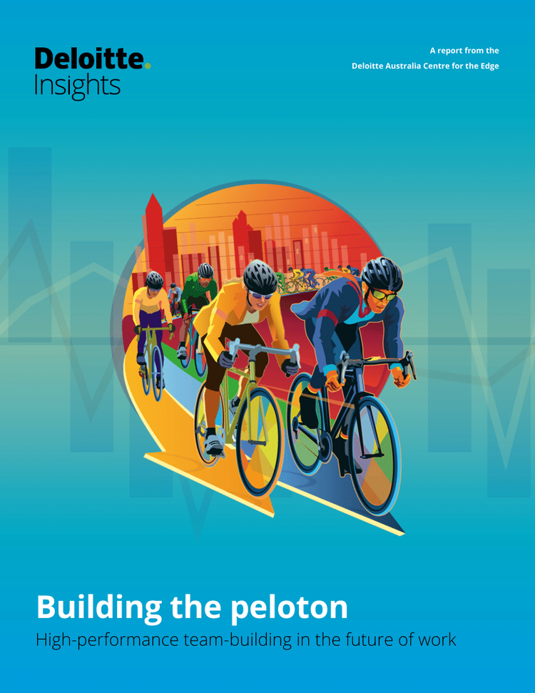
Building the peloton: High performance team-building in the future of work
In a new article from Deloitte Insights the authors explore the changing nature of teams in today’s business environment, examining how the analogy of a cycling peloton can help us to better understand how teams function in a modern organization. The article posits five conditions necessary for team effectiveness in a modern business peloton.
Read more July 10, 2020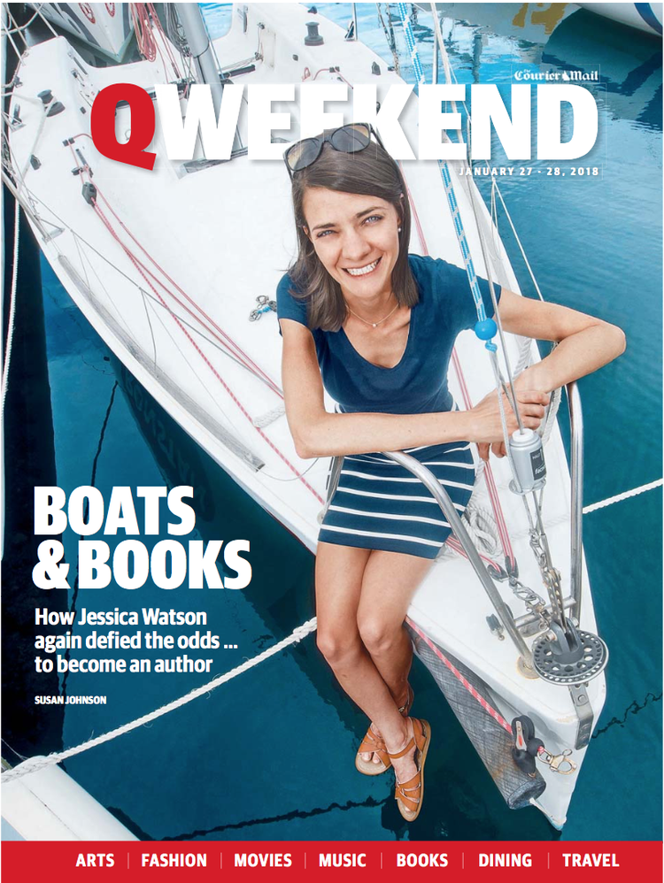
Courier Mail Feature: Wider Horizons
The Courier Mail's QWeekend magazine features Jessica and her most recent adventures. here.
Read more January 31, 2018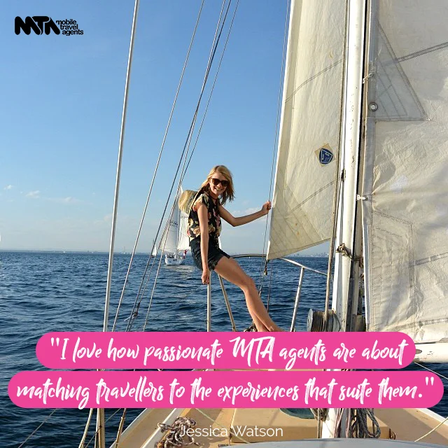
Why I'm So Proud to be an Ambassador for MTA Travel
As a brand ambassador for MTA Travel, I know you expect me to have good things to say about them, but one of the things I pride myself most on is my integrity, so you can rest assured that everything I have to say here is straight from the heart. here.
Read more November 22, 2017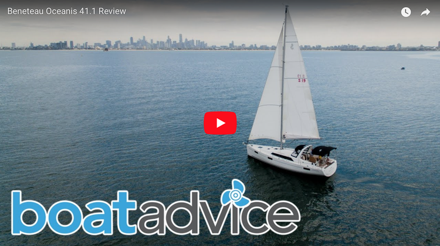
Boat Review: Beneteau Oceanis 41.1
In collaboration with BoatAdvice and Deckee, I reviewed the award-winning Beneteau Oceanis 41.1.
Read more September 25, 2017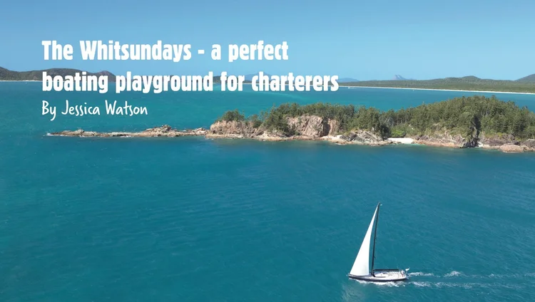
Sailing the Whitsundays
Destination Blog: it’s no secret that I’m a fan of the Whitsundays, and you probably won’t be surprised to hear that I wholeheartedly believe that the best way to experience the area is by boat.
Read more September 25, 2017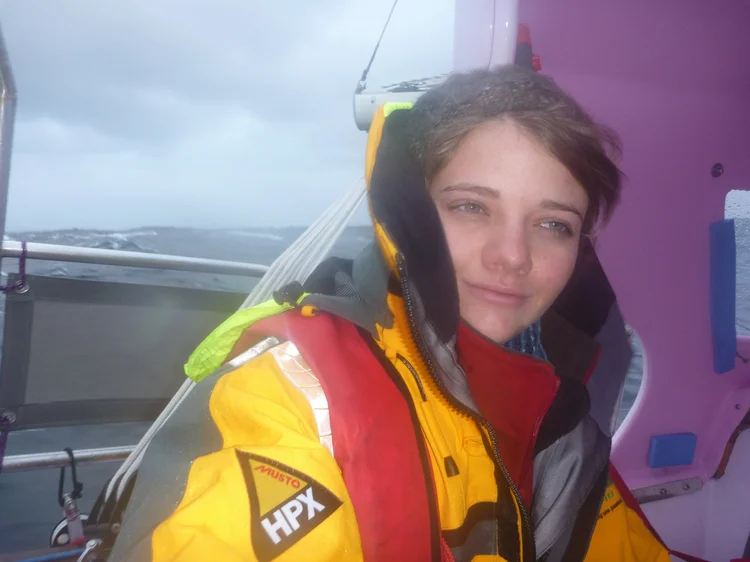
Jessica Watson: ‘People assumed I was fearless, that couldn’t be further from the truth.’
Jessica Watson stole the hearts of Australia when she became the youngest person to sail around the world unassisted. After arriving home in May of 2010, at just 16-years-old, the world assumed Jessica was a fearless woman. Now, at 22, Jessica tells Mamamia that wasn’t the case.
Read more September 9, 2017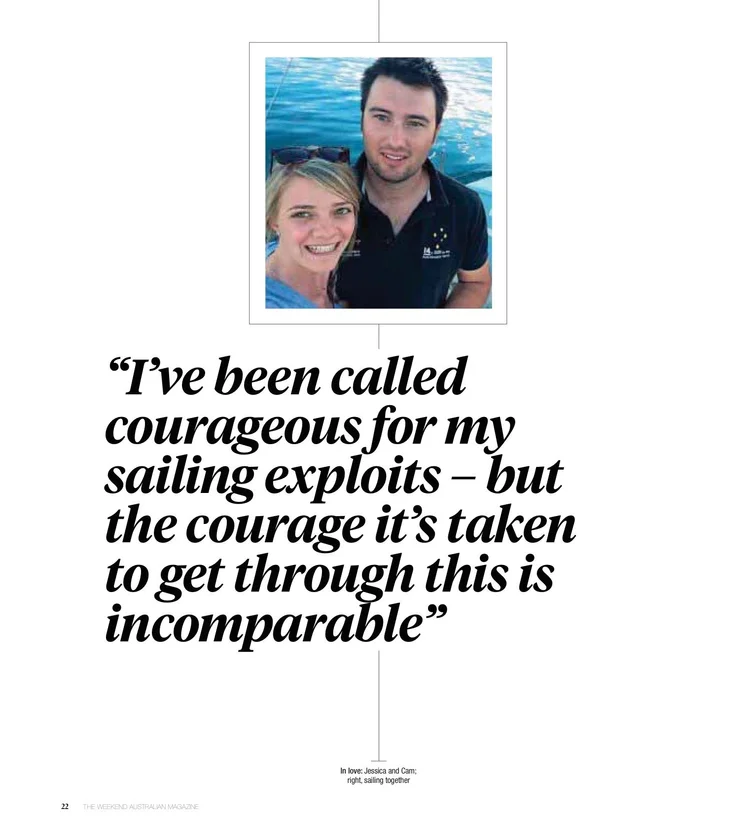
The Weekend Australian Magazine: Journey from the depths of grief
Last year, Jessica Watson lost the love of her life to a fatal stroke. Here, she discusses for the first time how she fought her way back into life.
Read more December 3, 2022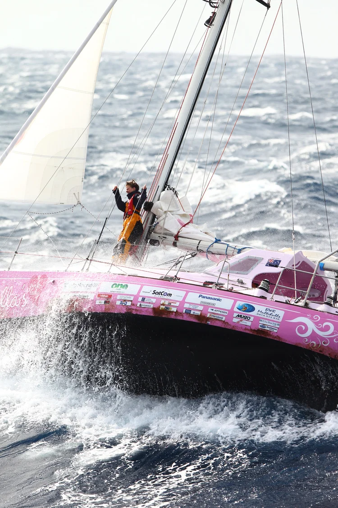
Sydney Morning Herald article: Jessica Watson on surviving this isolated life
During my 2009-2010 solo, non-stop voyage around the world, I
sighted land, other boats and aircraft only a handful of times –
never coming close enough to make out another person’s face for
210 consecutive days.
There were a number of times when it’s quite likely that I was the
most isolated person on earth, but despite this physical isolation
I never felt lonely.
Here are the key things that stopped me feeling alone:
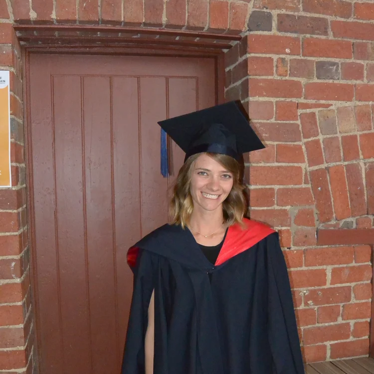
What I learnt from my MBA
For a girl who essentially ran away from school for a few years, I’ve really come to enjoy study. During the rather tumultuous few years after my voyage around the world, I did go back and finish school in my own way, but I’ll admit a few shortcuts were taken. So to patch a few educational holes, I signed myself up for university... here.
Read more December 13, 2017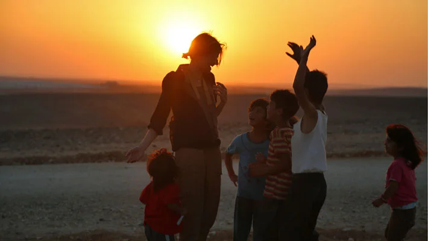
My Lebanese Diaries: From the Waves of the Mediterranean to the Dust of Syrian Refugee Camps
The World Food Programme's (WFP) Youth Ambassador Against Hunger Jessica Watson, the youngest person to sail the world, shares insights from her recent trip to Lebanon and Jordan where she sailed in the Mediterranean with a group of dynamic teens from Syria and Lebanon and visited refugee families living in camps. here.
Read more September 25, 2017.webp)
My Lebanese Diaries: From the Waves of the Mediterranean to the Dust of Syrian Refugee Camps
The World Food Programme's (WFP) Youth Ambassador Against Hunger Jessica Watson, the youngest person to sail the world, shares insights from her recent trip to Lebanon and Jordan where she sailed in the Mediterranean with a group of dynamic teens from Syria and Lebanon and visited refugee families living in camps. here.
Read more September 25, 2017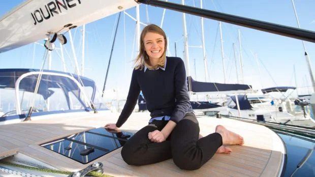
Jessica Watson: girl who conquered the world going into uncharted territory
The Sydney Morning Herald interviews Jessica about her latest adventure. here.
Read more September 25, 2017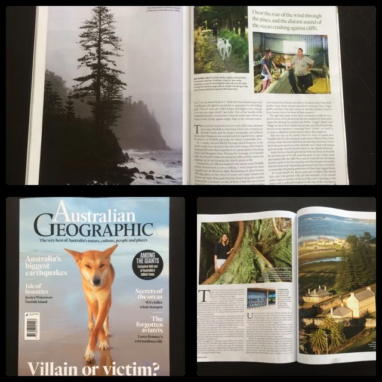
Australian Geographic Feature: Island of bounties
Australian Geographic Feature: With ties to a colourful past, Norfolk Island is a remote speck in the Pacific where fresh produce, sea views and pine-studded pastures abound. Yachtswoman Jessica Watson discovers its homegrown treasures. here.
Read more September 25, 2017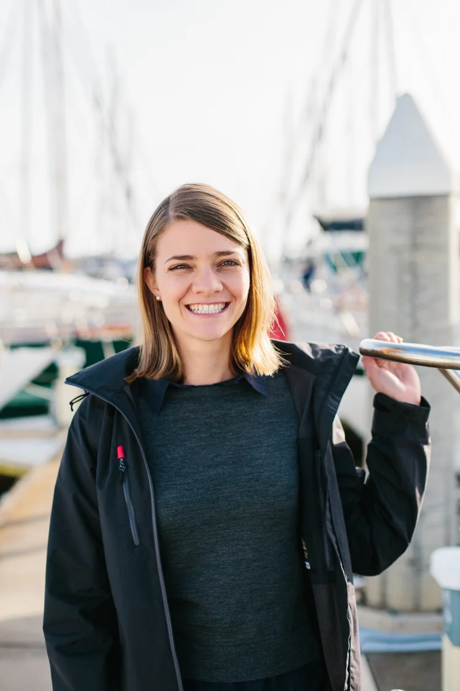
Jessica Watson's round-world yacht voyage to become a Netflix film
Netflix will make a feature film about Jessica Watson, who at 16 became the youngest person ever to sail around the world solo and unassisted when she cruised into Sydney Harbour in May 2010, 210 days after she had departed.
Read more July 18, 2020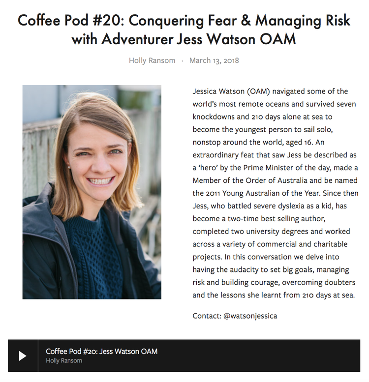
Podcast: Conquering Fear & Managing Risk with Adventurer Jess Watson OAM
Entrepreneur and intergenerational leadership expert Holly Ransom features Jessica in an episode of her podcast. Holly and Jessica's conversation covers conquering fear, managing risk and having the audacity to believe you can. Listen here.
Read more March 26, 2018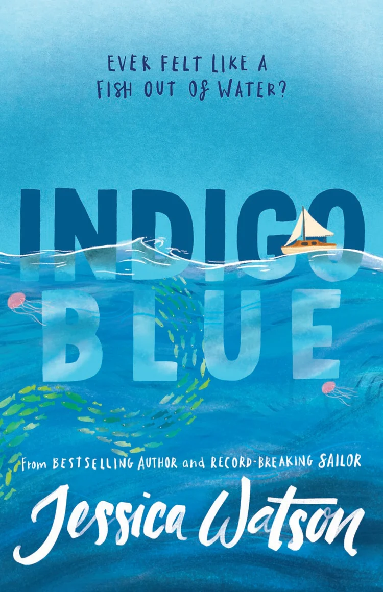
Introducing Indigo Blue, my new book!
Here’s what it’s all about;
What?
Indigo Blue is my debut novel. It’s a middle grade (so 9+)
fictional story.
Why?
Books have had a huge impact on me. They gave me a reason to push
through my early struggles with dyslexia, and it was a book that
inspired me to sail around the world.
here.
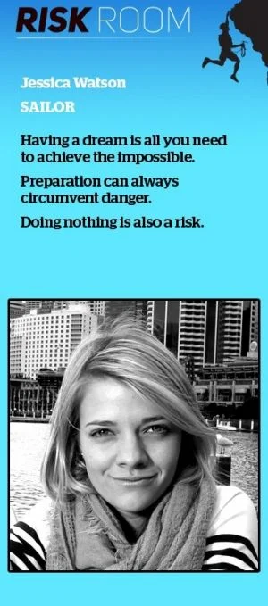
BusinessDay's Risk Room: How Jessica Watson conquered the world at 16
Without risk there is no reward. BusinessDay's Risk Room tells the stories of successful people who challenge the odds to do extraordinary things. here.
Read more September 25, 2017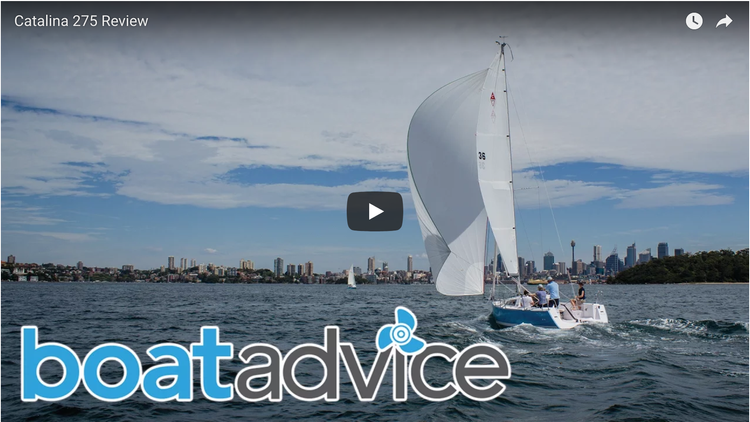
Boat Review: Catalina 275 Sport Yacht
In collaboration with BoatAdvice and Deckee I reviewed the award-winning Catalina 275.
Read more September 9, 2017